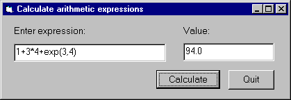
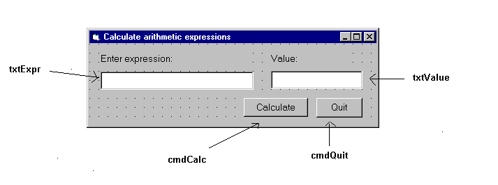
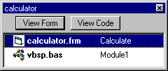

This example contains a simple program that allows you to enter an arithmetic expression (conforming to Prolog syntax) as a string and displays the value of the given expression, as shown in the following figure: 
The calculation itself will be done in Prolog.
We now we will go through the steps of developing this program.
calculator.
vbsp.bas file to the project.
calculator.
Edit it, adding two textboxes
txtExpr and txtValue, and two command buttons,
cmdCalc and cmdQuit:

Save the form window to the calculator.frm file.
Then the project will contain the following two files:

calc.pl, evaluating the given
expression with the is/2 predicate, and providing a minimal level
of exception handling:
prolog_calculate(Expr, Value) :-
on_exception(Exc, Value is Expr, handler(Exc,Value)).
handler(domain_error(_,_,_,_),'Incorrect expression').
handler(Exc,Exc).
Note that this example focuses on a minimal implementation of the problem, more elaborate exception handling will be illustrated in the Train example (see vb-ex-tr).
Compile this file, and deposit the file calc in the directory
where the calculator.vbp project is contained.
Form_Load procedure executed when the
calc form is loaded, calling the PrologInit() function and
loading the calc file with the help of the
PrologQueryCutFail(..)) function:
Private Sub Form_Load()
If PrologInit() <> 1 Then GoTo Err
If PrologQueryCutFail("ensure_loaded(app(calc))") <> 1 Then GoTo Err
Exit Sub
Err:
MsgBox "Prolog initialization failed", 48, "Error"
Unload Me
End Sub
calculate procedure activated
by the cmdRun command button. This procedure will execute the
prolog_calculate(X,Y) procedure defined in the calc.pl
Prolog file:
Public Function calculate(ByVal Expr As String) As String
Dim qid As Long
Dim result As String
Dim ret As Long
Dim Q As String
Q = "prolog_calculate(" & Expr & ",Value)"
qid = PrologOpenQuery(Q)
If qid = -1 Then GoTo Err ' e.g. syntax error
ret = PrologNextSolution(qid)
If ret <> 1 Then GoTo Err ' failed or error
ret = PrologGetString(qid, "Value", result)
If ret <> 1 Then GoTo Err
calculate = result
Call PrologCloseQuery(qid)
Exit Function
Err:
MsgBox "Bad expression", 48, "Error!"
calculate = ""
End Function
Form_Unload procedure executed when
the calc form is unloaded, e.g. when the application exits.
Private Sub Form_Unload(Cancel As Integer)
PrologDeInit
End Sub